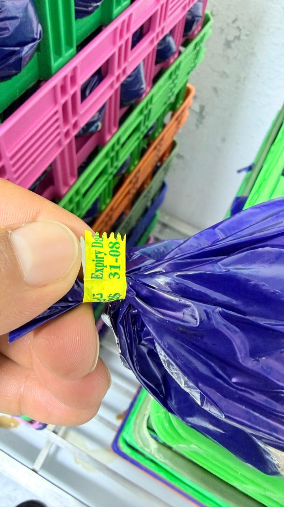
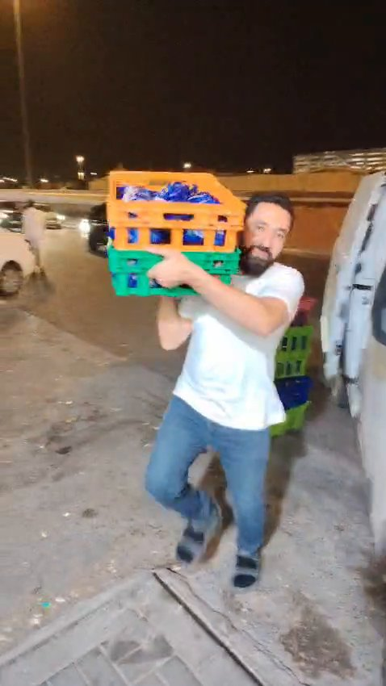
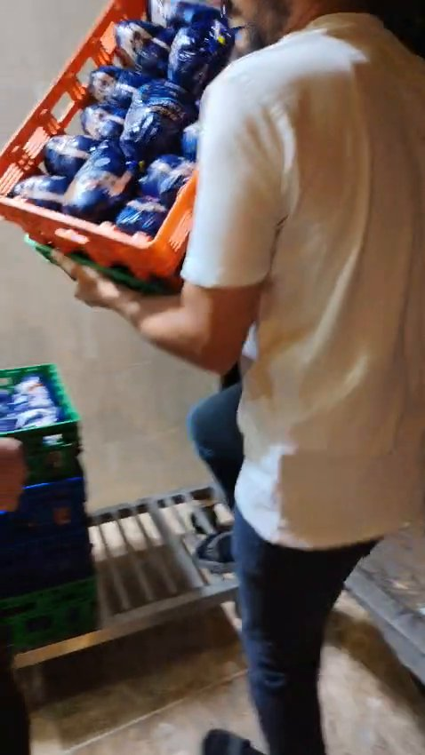
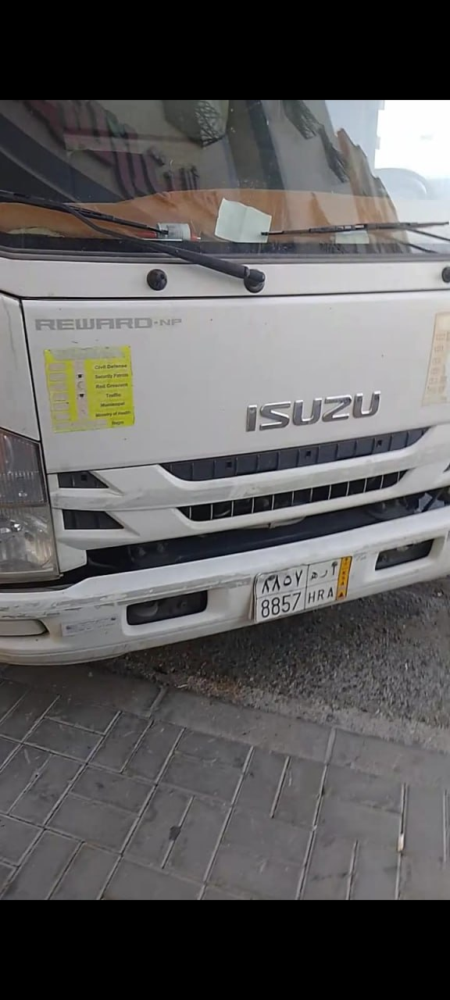
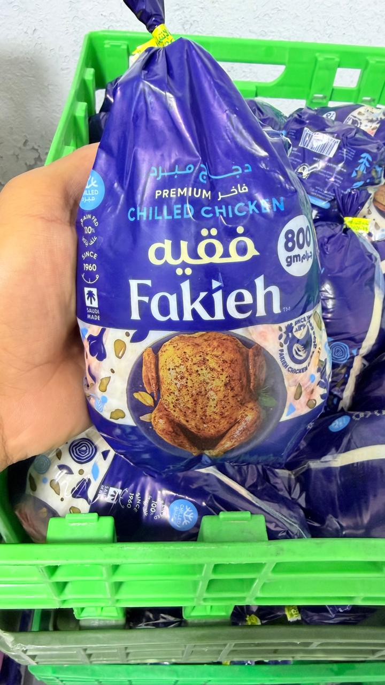
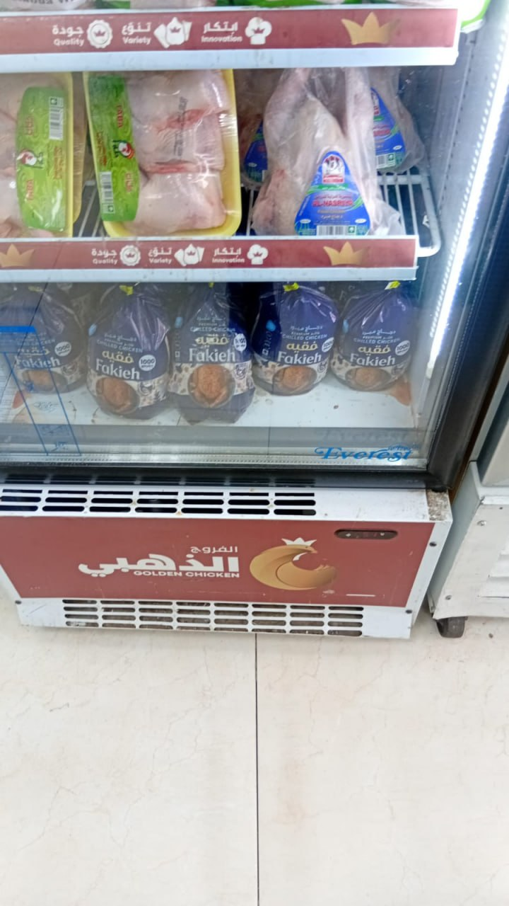
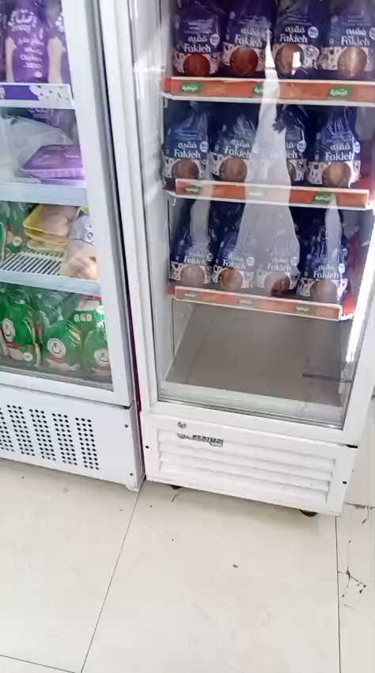
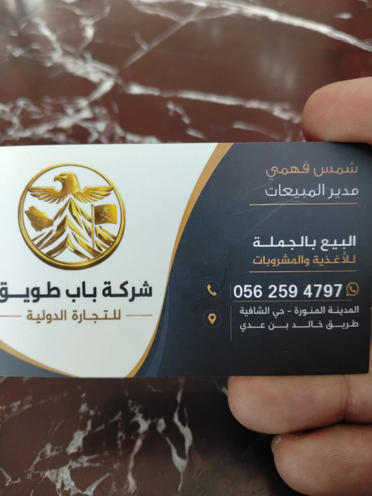
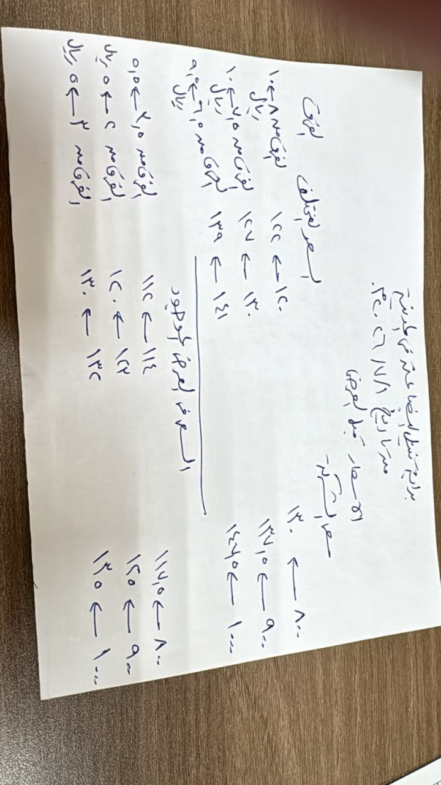
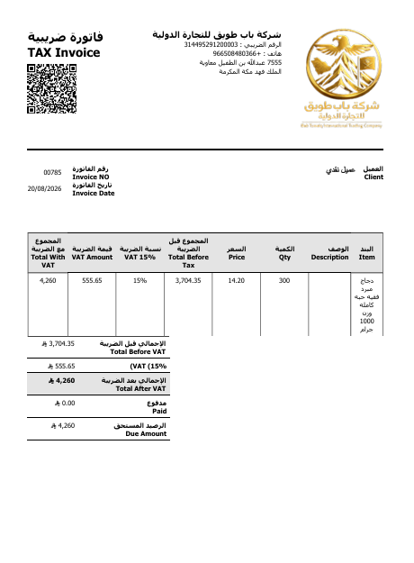

أسعدنا أن نكون معكم في خط واحد، ونؤمن إيمانًا راسخًا أن نجاحنا جزء من نجاح الشركة، وازدهارنا امتداد لازدهارها؛ فنحن شركاء في الرؤية قبل أن نكون شركاء في التوزيع. ومن هذا المنطلق نقدّم لحضرتكم هذا التقرير بوصفنا الوكيل الموزّع المعتمد لمنتجات الشركة في المدينة المنورة، التزامًا بواجب الإبلاغ، وبحرصٍ على مصلحة الطرفين — فقد ألقت الأقدار بنا جميعًا في مواجهة ظاهرة تهدّد أرباح الشركة وسمعتها ووجود الوكيل الرسمي، وهي مشكلة لا تُعالج إلا بيدين ممتدتين من الإدارة العليا.
فمنذ مطلع شهر يوليو 2026م، وتحديدًا حين بدأت التشغيلات تصل المدينة من مصادر خارجية، ظهرت في أسواق المدينة المنورة كميات من منتجات «فقيه» المبرّد بمختلف الأوزان (800 و900 و1000 و1200 غرام) تُباع للمطاعم والمحلات بأسعار تقل عن السعر الرسمي المفوتر لنا بفارق يتراوح بين 1.00 و1.50 ريال للحبة الواحدة حسب الوزن. وقد نتج عن ذلك:
مؤسسة يمان الخير وكيل توزيع رسمي لمنتجات فقيه المبرّد في المدينة المنورة بموجب عقد توزيع ساري، والتزام يومي بسحب البضاعة من الشركة بالأسعار الرسمية، وقد عملنا بهذه الصفة سنوات طويلة بثقة متبادلة دون مشكلات جوهرية.
غير أن استمرار المشكلة إلى اليوم، رغم علمه ومتابعته وتواصله المتكرر معنا، يؤكد لنا أن جذرها أعلى من صلاحيات الإدارة التنفيذية، وأن معالجتها تتطلب قرارًا مباشرًا من الإدارة العليا، وهو ما دفعنا إلى إعداد هذا التقرير ورفعه لحضرتكم.
جميع المقاطع بصيغتها الأصلية كما استُلمت بتاريخ 16/09/2026م، والطوابع الزمنية مذكورة داخل كل مقطع. التفريغ الصوتي أُنجز آليًا كقراءة أولية لأغراض الإحالة، والصوت الأصلي هو المرجع المعتمد.
تُظهر الجولات الميدانية الموثقة بالمقاطع (1، 2، 3، 4) ثلاجات عرض في محلات متعددة بالمدينة المنورة مفروشة بالكامل بأكياس «فقيه بريميوم تشيلد تشيكن» بأوزانها المختلفة، بما يؤكد توفر البضاعة في السوق بكميات كبيرة من مصدر آخر غير الوكيل الرسمي.
يوثّق المقطع (7) داخل أحد المحلات وجود كميات وصلت إلى مراحل متقدمة من الصلاحية بفعل الركود، وقد أرفقنا صورة مقرّبة لرابط الإغلاق الأصفر على كيس من إنتاج الشركة يظهر عليه تاريخ انتهاء 31-08 — وهو أثر مباشر لركود حركة البضاعة وانقلاب السوق نحو المصدر الأرخص.

يوثّق المقطعان (9) و(10) — المصوّران ليلًا — عملية تفريغ صناديق كاملة من أكياس فقيه المبرّد الأصلية من مركبة بيضاء إلى داخل أحد المحلات، وقد ورد في التعليق الصوتي المصاحب ذكر اسم «الجبالي» صراحة في سياق التوريد، وهو الموزع الذي تعود إليه — بحسب المعلومات الرائجة في السوق — هذه الحملة التسعيرية، ولديه محل معروف في المدينة.



تُثبت اللقطات المقرّبة المرفقة أن البضاعة المتداولة في السوق تحمل عبوات وبيانات الشركة الأصلية (عبوة 800 غرام، بيانات المصنع، الملصق الأصفر لرابط الإغلاق)، أي أنها من إنتاج فقيه حقيقي وليست بدائل أو تقليد، مما يستلزم تتبع مصدر تسرّبها من داخل سلسلة التوريد.



حصلنا خلال الجولات الميدانية على كرت أعمال شركة «باب طويق للتجارة الدولية» — نشاطها البيع بالجملة للأغذية والمشروبات — باسم شمس فهمي، مدير المبيعات، جوال 0562594797، والعنوان: المدينة المنورة — حي الشافية، طريق خالد بن عبد العزيز. ويتقاطع هذا الدليل المستندي مع ما ورد في التعليقات الصوتية للأدلة المرئية من ذكر اسم «الجبالي» في سياق إنزال البضاعة بسعر الحرق، ويتيح للشركة تتبّع الجهة الموازية ضمن تحقيقها المصدري.

نرفق الورقة الأصلية بلوحة الأسعار (مكتوبة بخط اليد) كما وصلتنا من السوق، والتي توضح الفرق بين السعر الرسمي المفوتر لنا والسعر المتداول من المصدر الخارجي:

| الوزن | السعر الرسمي المفوتر للوكيل (ريال/حبة) | السعر المتداول في السوق (ريال/حبة) | الفرق لكل حبة |
|---|---|---|---|
| 800 غرام | 13.00 | 11.50 | 1.50− |
| 900 غرام | 13.75 | 12.50 | 1.25− |
| 1000 غرام | 14.50 | 13.50 | 1.00− |
| 1200 غرام | 15.50 | 14.50 | 1.00− |
وبالنظر إلى الفرق على مستوى الحبة الواحدة (من 1.00 إلى 1.50 ريال للحبة)، لا يستطيع الوكيل الرسمي أن ينافس — فالمطعم والمحل يشتريان من المصدر الموازي مباشرة، وهو الفرق الذي أفقدنا القدرة على المنافسة تمامًا.
بالإضافة إلى الآثار التشغيلية الموضّحة أدناه، نرفق بيان الخسارة الختزارية الناتج عن فرق الجملة المفردة للفترة (10-70) حتى الآن، كما ورد في المستند الرسمي المرفق (تحديث 19 سبتمبر 2026م):
| البند | القيمة |
|---|---|
| المشتريات خلال الفترة | 441,000 حبة |
| مديونية راكدة لدى العملاء المتوقّفين عن السداد | 150,000 ريال |
| فروق أسعار محمولة على المؤسسة (البيع بالخسارة) | 176,000 ريال |
| إجمالي مبلغ الخسارة | 326,000 ريال |
| الرصيد اليومي المتّبقي في المخزون المدين مستودعاتنا تترصّد لأول مرة ما يقارب 8,000 حبة — وهو ما لم نشهده من قبل طوال فترة عملنا مع الشركة؛ فبضاعتنا يومية تُصرف في يومها، وفي الأحيان النادرة تُصرف في اليوم التالي | ≈ 8,000 حبة |
| عدد المطاعم والمحلات التي لم تستجب لنا لتحويلها إلى الأسعار المحروقة قاعدة عملاء بنيناها سنوات، رفضت ~40 مطعمًا ومحلًا التعامل بأسعارنا الرسمية وتحولت إلى البضاعة المحروقة | 40 عميلًا |
لإظهار أثر التسعير المكسور على أرض الواقع: فاتورة ضريبية رسمية صادرة من شركة باب طويق للتجارة الدولية بتاريخ 20/08/2026م — 300 حبة دجاج فقيه مبرّد (وزن 1000 غرام) بسعر 14.20 ريالًا للحبة، وهو أقل من السعر الرسمي المفوتر للوكيل للوزن نفسه (14.50 ريالًا)، بإجمالي 4,260 ريالًا لم يُسدّد منه شيء. ولم يعد العميل قادرًا على بيع البضاعة بسعر يغطي تكلفته، إذ يتداولها السوق الموازي عنده بحبة أرخص من سعره، فتحمّلنا نحن ردّ البضاعة ومسؤوليتها، والمحل تحمّل خسارته، والشركة خسرت سمعتها السوقية — والمكسب الوحيد لمن يحرق السعر من خارج قناة التوزيع.

| # | المرفق | الوصف |
|---|---|---|
| 1 | لوحة الأسعار بخط اليد | سعر الشركة مقابل سعر السوق (أصلية) |
| 2 | صورة المركبة | إيسوزو، لوحة 8857 ح ر أ |
| 3 | صور السلال والبضاعة | فقيه مبرّد في سلال التوزيع الأصلية |
| 4 | صورة العبوة الأمامية | فقيه بريميوم تشيلد تشيكن 800 غرام |
| 5 | صورة تاريخ الانتهاء | رابط الإغلاق الأصفر 31-08 |
| 6 | صورة بيانات العبوة الخلفية | بيانات الشركة والمصنع والوزن |
| 7 | صورة الثلاجة المخالفة | منتجات فقيه في ثلاجة علامة أخرى |
| 8–17 | المقاطع المصوّرة (10 مقاطع) | الجولات الميدانية والتفريغ الليلي بصوتها الأصلي |
| 18 | كرت أعمال «باب طويق للتجارة الدولية» | الدليل المستندي على جهة التوريد الموازية — شمس فهمي، مدير المبيعات |
| 19 | فاتورة الشراء الأصلية رقم 00785 | صادرة عن شركة باب طويق للتجارة الدولية — نموذج الأثر المباشر (عملية شراء بالقوة) |
نقر بأن جميع المقاطع والصور المرفقة أصلية وغير معدّلة، وأن ما ورد فيها من أسماء وأسعار هو ما قيل وظهر فعلًا، ونتحمّل المسؤولية القانونية عن صحة ذلك، ونؤكد استعدادنا الكامل لتسليم الملفات الأصلية للإدارة متى طُلب منّا ذلك، وللتنسيق الفوري في أي جولة ميدانية مشتركة تُرغب الإدارة في القيام بها.
أُعدّ هذا التقرير لغرض الإحالة إلى الإدارة العامة للشركة، وهو مستند إحالة أولي؛ والملفات الأصلية هي المرجع النهائي.